The Series
Calista
A study of possession and refusal—leather, chain, and a face held between hands.
The hands arrive before the face. What they hold is not a woman but the idea of one— and she declines it.
Calista was shot against a painted ground that refuses to sit still: torn, scrawled, unresolved. Against it, the figure is composed entirely of surfaces that resist touch—patent leather, chain, lacquer. The series moves from the close grip of the opening plates to full-length compositions where a second, masked presence enters the frame. Nothing is decorative. Every hand is placed.
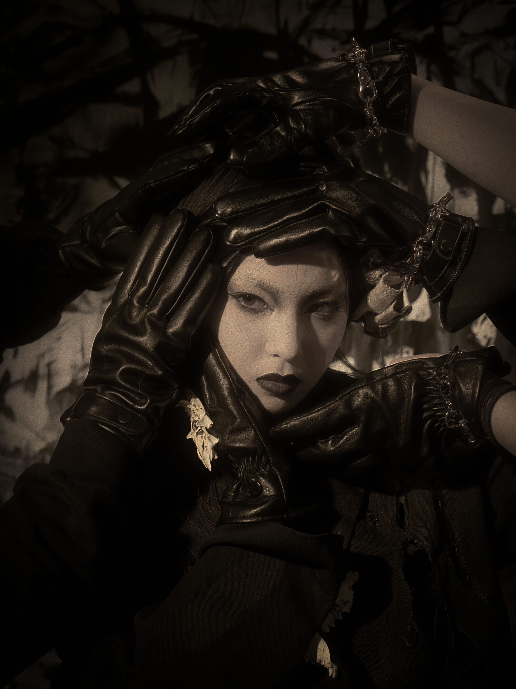
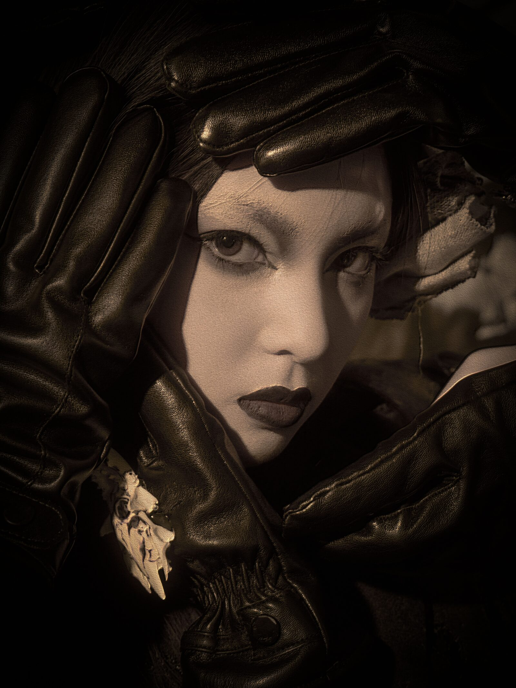
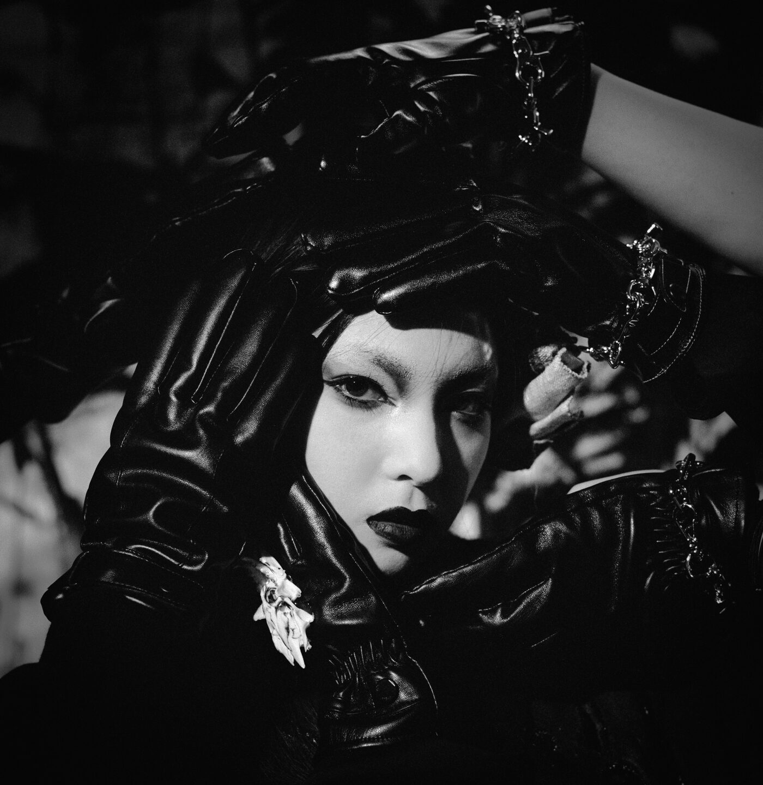
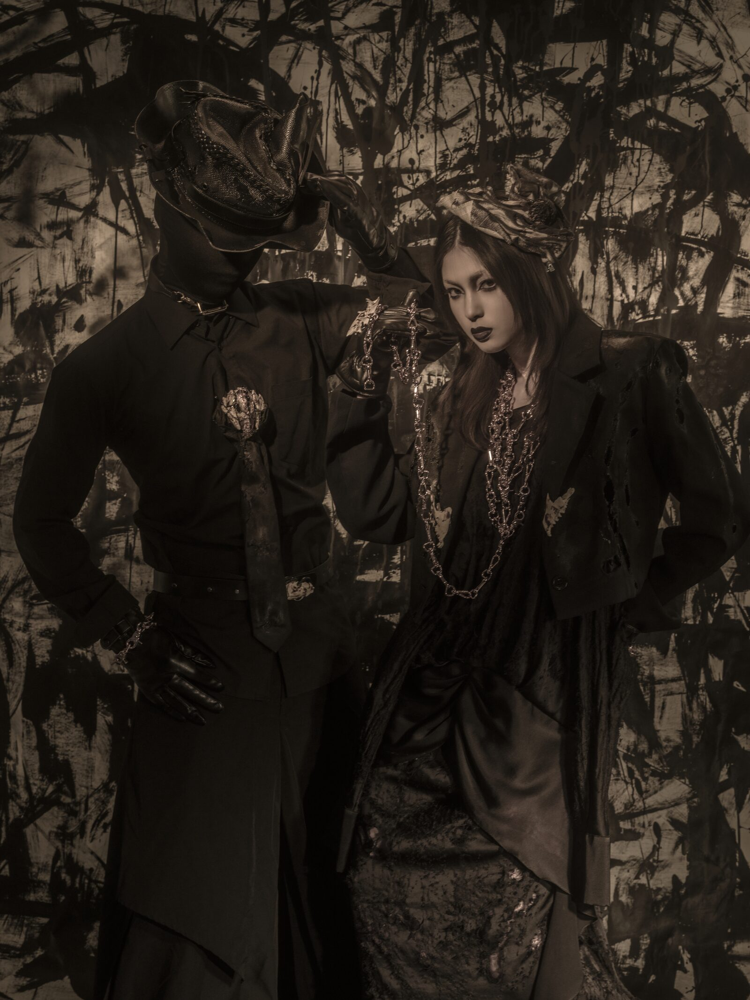
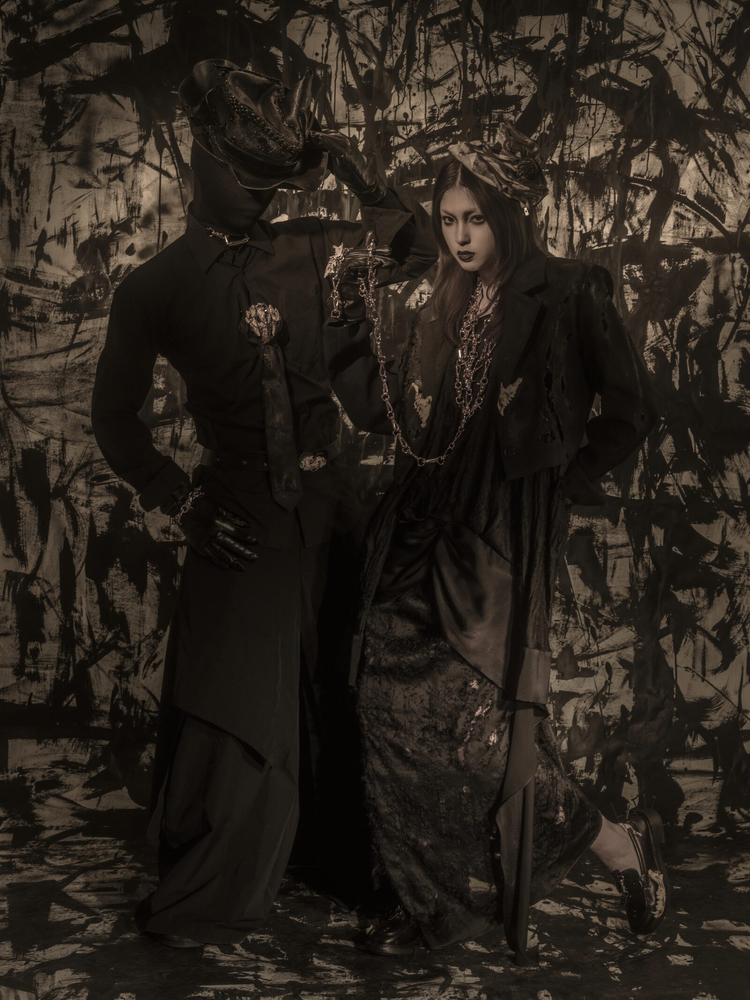
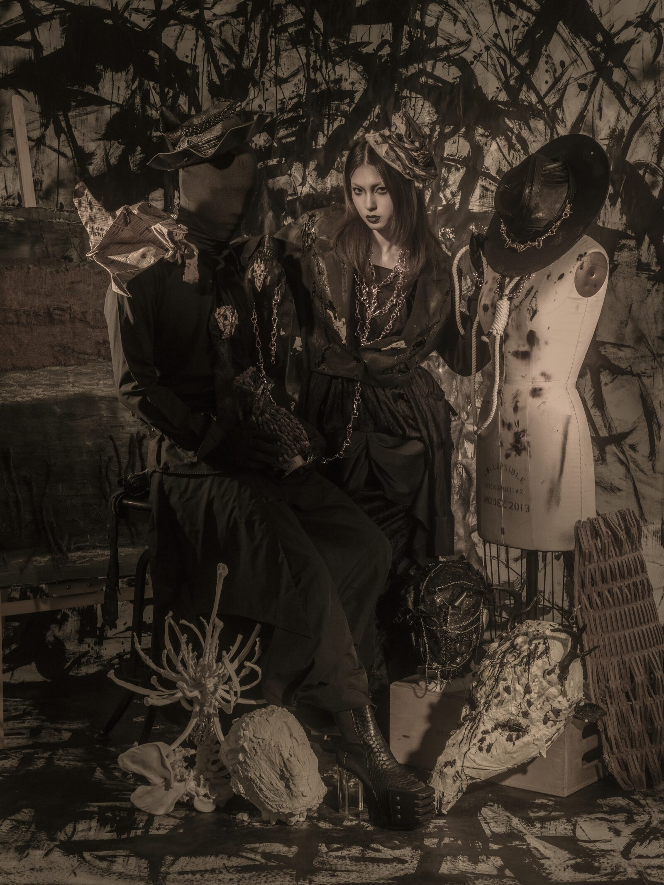
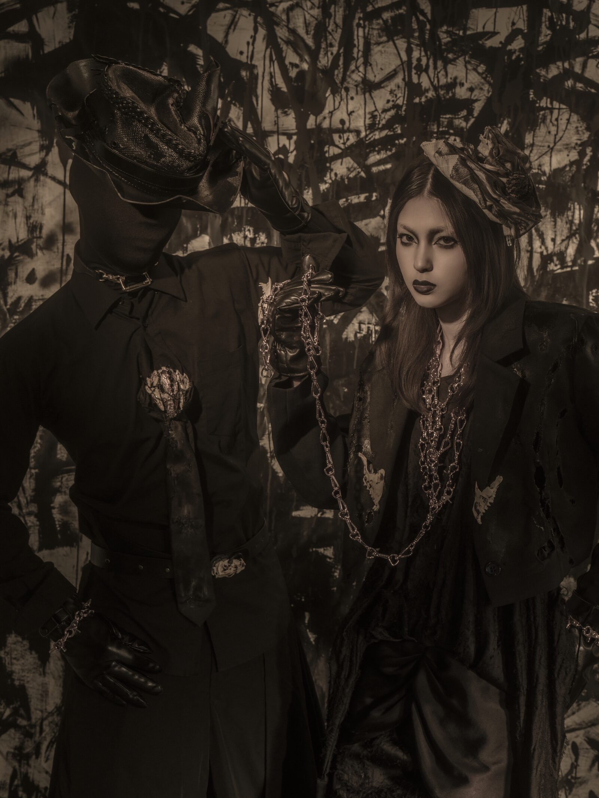
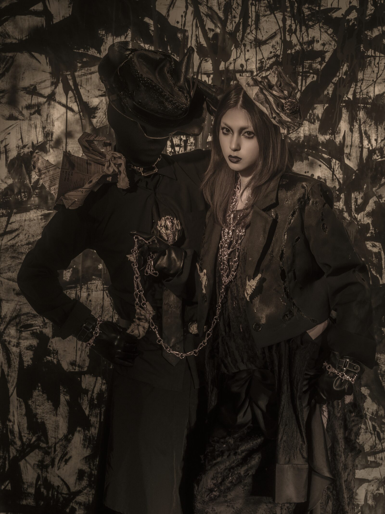
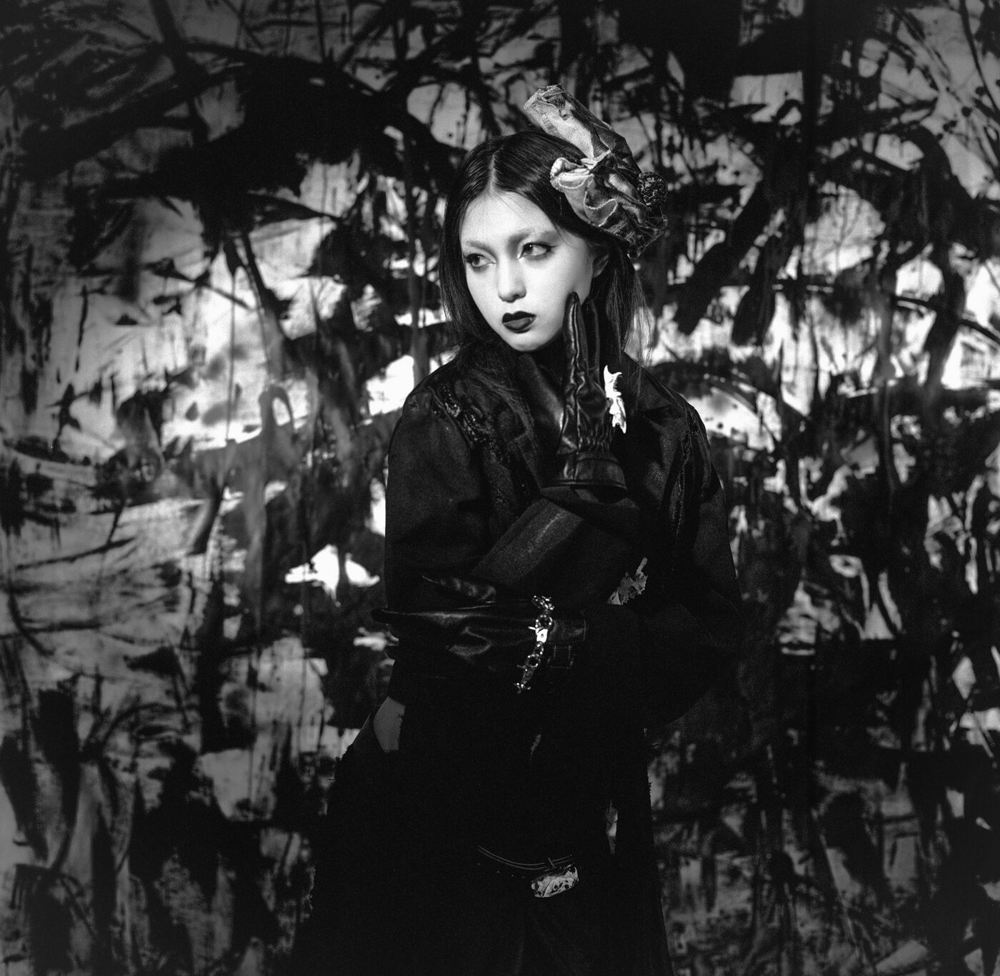
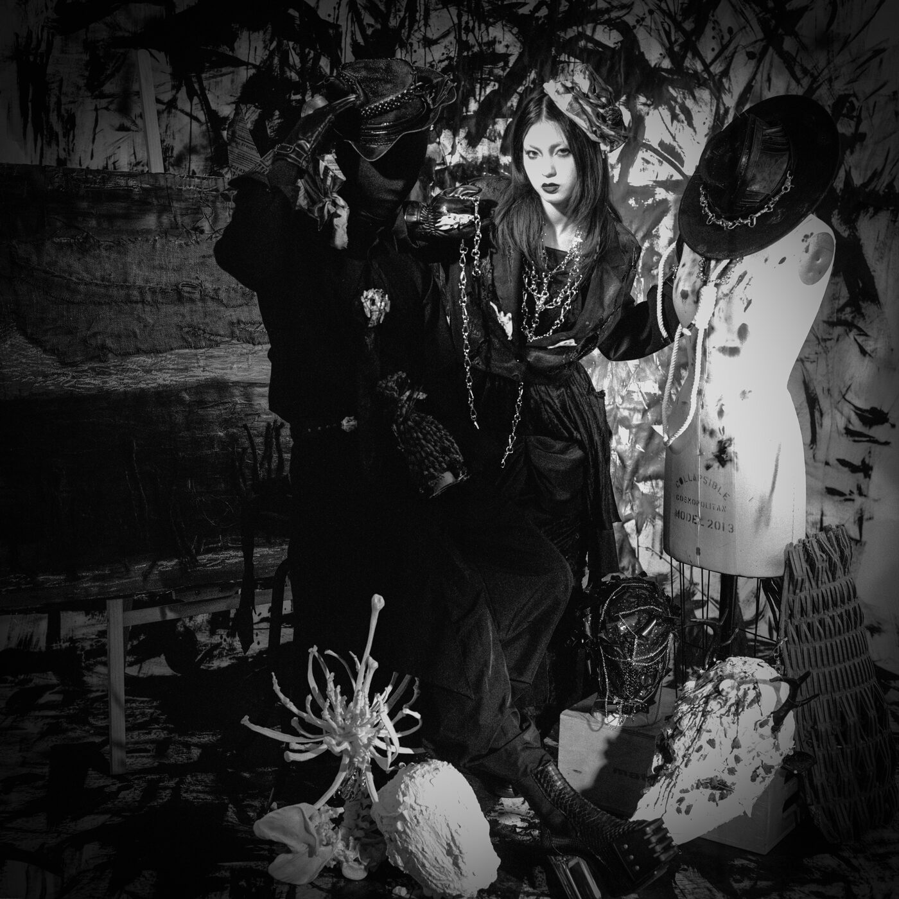
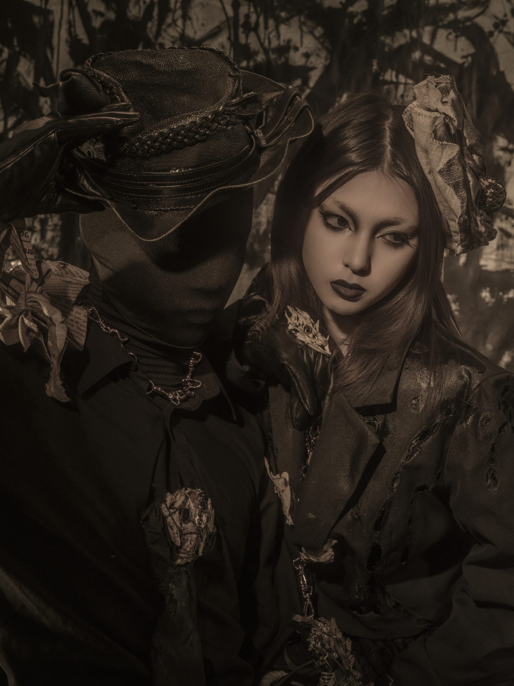
Calista
- House
- Cittàcico
- Series
- Universe
- Format
- Digital & film
- Location
- New York